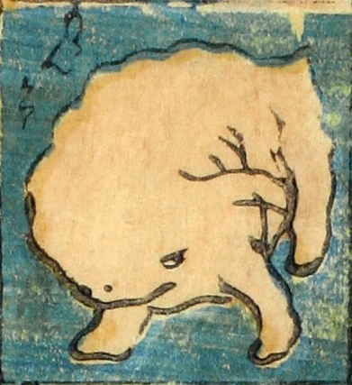

ももんがあ；モモンガア

白い肉塊のようなものに短い腕脚が生えており、四つんばいで動いている。小さな目と鼻がついている。
著作者：芳盛／出典：親書誌：U426_nichibunken_0073：しん板化物尽し；シンパンバケモノヅクシ／日付：2006／資源識別子：U426_nichibunken_0073_0026_0000
Copyright (c)2010- International Research Center for Japanese Studies, Kyoto, Japan. All rights reserved.